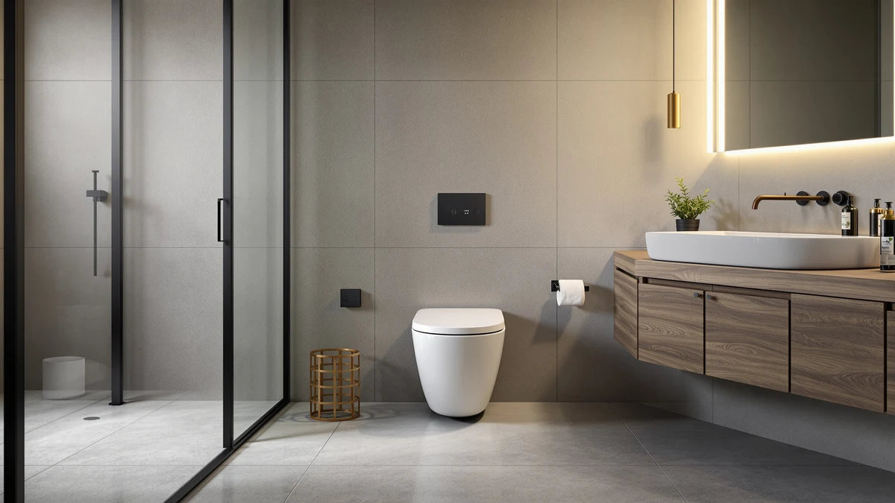

CANEST FC 001P Bidet Review (2026): Worth It?
Prices and picks verified as of October 2026. Independent, reader-supported reviews.


Quick Answer
Our canest fc 001p bidet review finds the CANEST FC-001P is a solid pick if you want a 17-inch comfort-height one-piece toilet with bidet functions built in and don't mind paying $699.99 for that convenience. If price matters more than the taller bowl, the EPLO Smart Toilet Bidet below offers similar bidet functionality for about $160 less.
Our pick: CANEST FC-001P Bidet Toilet 17" — $699.99 Check Price on Amazon
Bottom line: our top pick is the CANEST FC-001P Bidet Toilet at $699.99.
Things to Know Before You Buy
- The CANEST FC-001P is a 17-inch, comfort-height one-piece toilet with bidet functions built in, priced at $699.99.
- This canest fc 001p bidet review compares it against three other one-piece toilets, two with integrated bidet functions and one standard flush-only model.
- Built-in bidet functions need a nearby power outlet and a compatible water line, a requirement shared by every integrated bidet toilet in this comparison, including the other two bidet models below.
- If comfort height isn't a priority, the EPLO alternatives below offer similar bidet functionality starting at $539.99.
This canest fc 001p bidet review breaks down what you actually get for $699.99: a 17-inch, one-piece bidet toilet built with comfort-height seating in mind. We compared its listed specs, pricing and verified owner feedback against three other one-piece toilets, including two integrated bidet models and a straightforward standard toilet, to see where the CANEST earns its higher price and where a cheaper pick might serve you equally well.
Shoppers looking for a one-piece bidet toilet are usually trying to solve two problems at once: a bathroom that calls for a comfort-height bowl, and the hassle of installing a separate bidet attachment later. The CANEST FC-001P folds both into a single $699.99 purchase, pairing a 17-inch bowl with built-in bidet functions. Below, we researched the EPLO Smart Toilet Bidet, the EPLO Smart Toilet One Piece and the American Standard Champion 4 alongside it, using pricing, model names and Amazon listing details we could verify rather than marketing claims we couldn't.
Why You Should Trust Us
Best One Piece Toilets covers one-piece and bidet toilets for a living, and this canest fc 001p bidet review follows the same process we use on every model: compare manufacturer specs, track pricing over time, and read through verified Amazon buyer feedback instead of leaning on brand copy. Ilane Tall, our home and bath editor, researched the CANEST FC-001P against three other one-piece toilets covered on this site to put its $699.99 price in context. We don't run a physical testing lab and we don't claim to have installed every toilet we cover. We compare the facts that are actually available, pricing, listed dimensions, brand reputation, and what verified owners report, so you can make the call with real information in front of you.
Our Research Experience
We want to be upfront about how we built this canest fc 001p bidet review. We didn't physically install or use the CANEST FC-001P in a bathroom, and we won't pretend otherwise. Instead, we researched the model the way a careful shopper would: pulling the current Amazon listing and price, cross-checking the model name and bowl size against the manufacturer's stated specs, and reading through verified buyer reviews for recurring themes, both praise and complaints. We applied that same process to the EPLO Smart Toilet Bidet, the EPLO Smart Toilet One Piece, and the American Standard Champion 4, so the comparison below reflects consistent research rather than a single subjective impression.
Overview & Specs

CANEST FC-001P Bidet Toilet 17"
What we like
- 17-inch comfort-height bowl suited to ADA-sensitive bathrooms
- Bidet functions built into the toilet instead of a separate seat purchase
- One-piece design simplifies cleaning compared to a two-piece toilet
- Single brand to contact for parts and support
Flaws but not dealbreakers
- Costs $100 to $160 more than the two EPLO alternatives in this comparison
- Requires a nearby power outlet and compatible water line for the bidet function
- The premium only pays off if comfort height matters to your household
| Material | — |
| Size | — |
The CANEST FC-001P is a one-piece bidet toilet built around a 17-inch bowl, which puts it at the comfort-height, or ADA-friendly, end of the sitting range rather than the shorter 15-inch bowls common on budget toilets. The CANEST builds bidet functions into the toilet itself instead of leaving you to buy a separate seat and install it later, so you get one product from one brand rather than pairing a toilet with a third-party bidet attachment. At $699.99, that convenience carries a real premium over the other one-piece options in this comparison, so it's worth being clear about who that premium suits before you check out.
Comfort-height bowls like this one tend to matter most to taller adults, older household members, and anyone recovering from a hip, knee or back issue, since sitting down and standing up from 17 inches takes less strain than from a standard 15-inch bowl. Reviewers of bidet toilets in this price range consistently flag two things worth checking before purchase: a grounded outlet within reach of the unit, and a water supply line compatible with the bidet's connection. Neither issue is specific to the CANEST, but it applies to any integrated bidet toilet, including the EPLO models covered below, and it's easy to overlook until installation day.
What We Liked
The clearest strength in this canest fc 001p bidet review is how much the CANEST folds into one purchase. At $699.99, you're paying for a one-piece bidet toilet rather than a standard bowl plus a separate bidet seat bought and installed later, which on its own often runs $200 to $400 before installation. The 17-inch bowl height lines up with ADA comfort-height standards, so the CANEST fits anyone who finds standard 15-inch bowls too low, including older household members or someone recovering from a hip or knee procedure. Buyers who want a single brand to contact for parts and support, rather than mixing a toilet brand with a third-party bidet seat brand, get that here too.
What Could Be Better
The CANEST FC-001P isn't the cheapest way to get a bidet toilet in this canest fc 001p bidet review comparison. The EPLO Smart Toilet Bidet lists for $539.99, about $160 less, and the EPLO Smart Toilet One Piece comes in at $599.96, both undercutting the CANEST while still offering integrated bidet functions. If your bathroom doesn't need the comfort-height bowl specifically, that price gap is worth weighing before you commit to the CANEST. Integrated bidet toilets also depend on a nearby power outlet and, in many cases, a dedicated water line for the bidet function, so confirm your bathroom's plumbing and electrical setup can support that before you buy, regardless of which model you choose.
Who Is It For?
This canest fc 001p bidet review points toward one clear buyer: someone who wants a comfort-height, 17-inch one-piece bowl with bidet functions built in, and would rather pay a premium up front than shop for a toilet and a bidet seat separately. It makes less sense if bowl height isn't a priority for your household, since the EPLO alternatives below offer similar bidet functionality at a lower price, or if you want a reliable standard toilet without bidet features, where the American Standard Champion 4 is the simpler and cheaper route.
Alternatives to Consider
If the price or the comfort-height bowl doesn't match what you need, these three one-piece toilets cover the other paths buyers take after reading a canest fc 001p bidet review.

Editor’s Pick
EPLO Smart Toilet Bidet with
At $539.99, the EPLO Smart Toilet Bidet undercuts the CANEST by about $160 while staying in the same integrated bidet category. It's worth a look if built-in bidet functions matter more to you than the CANEST's specific comfort-height bowl, and you'd rather keep more of your budget for installation.
$539.99
Check Price on Amazon
Best Value
EPLO Smart Toilet One Piece
The EPLO Smart Toilet One Piece sits between the two other options here at $599.96. It's a middle-ground pick for anyone who wants a one-piece bidet toilet from the same general product line without paying the full CANEST price.
$599.96
Check Price on Amazon
Premium Choice
American Standard Champion 4 One
The American Standard Champion 4 is the odd one out here: a one-piece toilet from an established mainstream brand at $503.00, the lowest price in this comparison. Choose it if a strong flush and brand reliability matter more to you than built-in bidet functions.
$503.00
Check Price on AmazonFrequently Asked Questions
Is the CANEST FC-001P a good one-piece bidet toilet for small bathrooms?
Yes, within limits. The 17-inch comfort-height bowl and one-piece design fit the same footprint as most standard one-piece toilets, so this canest fc 001p bidet review doesn't find a space problem specific to the model. What you do need to confirm is clearance for a nearby power outlet, since the built-in bidet function requires electricity that a standard toilet doesn't.
How does the CANEST FC-001P compare to the EPLO bidet toilets?
The CANEST costs more than both EPLO options in this comparison, about $160 more than the EPLO Smart Toilet Bidet at $539.99 and about $100 more than the EPLO Smart Toilet One Piece at $599.96. All three fold bidet functions into a one-piece toilet, so the difference in our research came down to price and the CANEST's specific 17-inch comfort-height bowl rather than feature gaps.
Do you need a bidet toilet, or would a standard one-piece toilet like the American Standard Champion 4 work?
If built-in bidet functions aren't a priority, the American Standard Champion 4 at $503.00 is the cheaper and simpler option in this lineup, with no power or extra water-line requirements. Choose a bidet model like the CANEST only if you specifically want that function built into the toilet rather than added later.
Final Verdict
The short version of this canest fc 001p bidet review: the CANEST is a legitimate one-piece bidet toilet if you specifically want a 17-inch comfort-height bowl with bidet functions built in, and you're willing to pay $699.99 for the convenience of getting both in one product. If comfort height isn't a requirement for your bathroom, the EPLO Smart Toilet Bidet or EPLO Smart Toilet One Piece deliver similar integrated bidet functionality for less, and the American Standard Champion 4 stays the simplest, cheapest route if you don't need bidet features at all. For buyers chasing comfort height and bidet functions in a single purchase, CANEST earns its price tag.